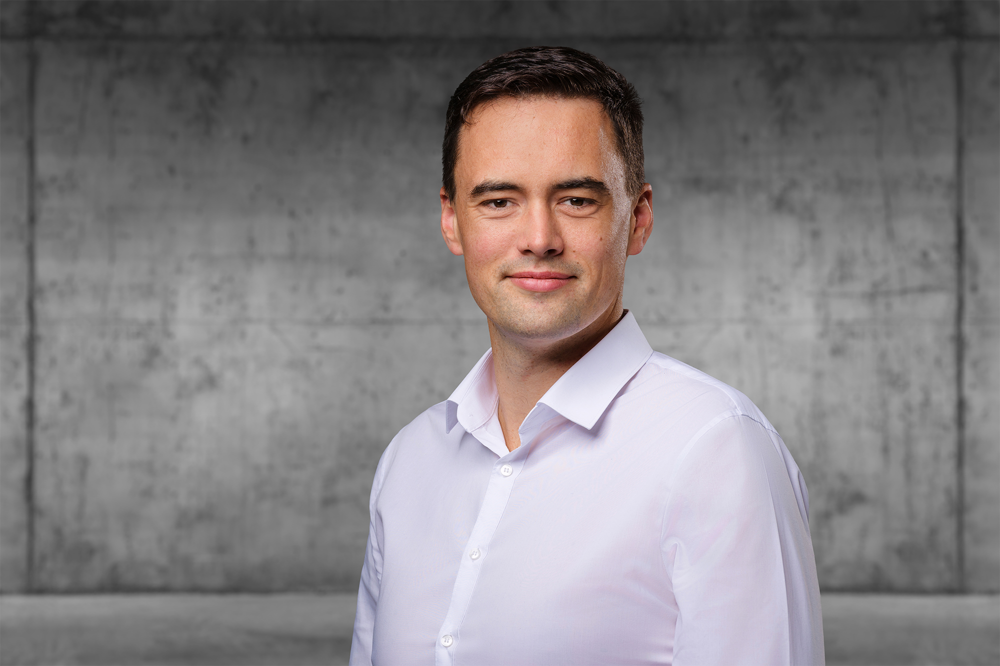

Head of Industrial Security · Campus Schwarzwald · M.Sc. Mechanical Engineering
Head of Industrial Security at Campus Schwarzwald, a cluster of companies in the mechanical engineering and manufacturing industries. Holding a Master's degree (M.Sc.) in Mechanical Engineering with a specialization in Production Engineering, I am responsible for ensuring the security of industrial machinery and components. My expertise focuses on Public Key Infrastructure (PKI), digital identities, and their applications in industrial environments.
I combine engineering pragmatism with deep technical expertise in applied cryptography and industrial cybersecurity. With a background in mechanical engineering, I understand how the industry works. I then moved into software and security, gaining in-depth knowledge through hands-on experience.
I thrive on taking ownership, leading technical teams, speaking at conferences, teaching students and engineers, and building solutions that solve real-world problems. I love details, thinking end-to-end, and presenting complex content to different audiences. I specialize in turning complex security concepts into practical engineering solutions that balance technical feasibility with cost-effectiveness—because security is always a tradeoff.
Co-created and technically led the development of Trustpoint, an open-source trust anchor and PKI platform developed together with contributors from multiple organizations. Successfully completed a Cyber Resilience Act (CRA) assessment for the project.
Security is always a tradeoff between what is technically feasible and what is cost-effective. Standards help us speak the same language and create common knowledge and understanding—but engineering is what turns requirements into secure systems that actually work in the real world. Every good concept starts with a sequence diagram.